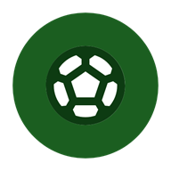
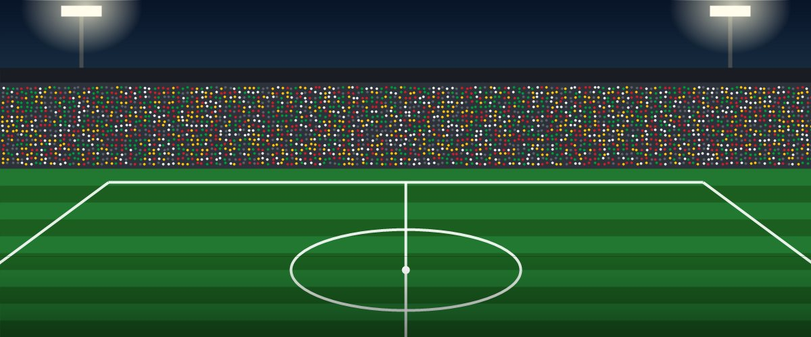
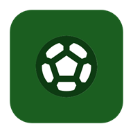

Esta memoria documenta la primera práctica del módulo de PMDM. El objetivo no es programar funcionalidad, sino analizar el desarrollo móvil, preparar bien el entorno de trabajo y organizar todos los recursos de una app Android sencilla como se haría en un proyecto real.
La app elegida es NowFootball, una aplicación de resultados de fútbol. He elegido este tema porque es una app que yo mismo usaría: cuando hay jornada quiero saber cómo van los partidos sin tener que abrir una web llena de anuncios. Además, el tema da mucho juego con los recursos: colores muy reconocibles (el verde del césped, el amarillo del marcador o el rojo de «en directo»), textos con parámetros (minuto, marcador), listas de competiciones e imágenes.
El proyecto está hecho en Java con vistas XML a partir de la plantilla Empty Views Activity, con API mínima 24 (Android 7.0). Tiene dos pantallas (lista de partidos y detalle de un partido), está traducido al inglés y, como ampliación, incluye tema oscuro y un diseño específico para horizontal.
La memoria sigue el orden del enunciado: Parte A (análisis del desarrollo móvil), Parte B (especificación de la app), Parte C (entorno de desarrollo) y Parte D (recursos), y termina con una conclusión personal.
Ventajas. El móvil va siempre con el usuario: una app puede avisarle en el momento justo (por ejemplo, de un gol de su equipo) con notificaciones push, accede directamente al hardware (GPS, sensores, vibración), se abre con un toque y puede funcionar sin conexión con datos guardados. Google Play se encarga de instalarla y actualizarla.
Inconvenientes. Hay que pasar por las revisiones de la tienda, mantener un proyecto por plataforma si se quiere nativo en Android e iOS y, sobre todo, tener en cuenta limitaciones que en escritorio o web casi no existen:
| Limitación | Cómo afecta a NowFootball |
|---|---|
| Batería: la red, la pantalla y la CPU gastan una batería limitada. | No puedo pedir resultados cada pocos segundos. Solo actualizaré cuando haya partidos en directo, en intervalos razonables o mediante push, y pararé las actualizaciones en onPause(). |
| Conectividad: la conexión es inestable (wifi, 4G, sin cobertura) y los datos son limitados. | En un estadio lleno la red va fatal. La app debe mostrar el último resultado guardado con «Actualizado hace X min» en vez de quedarse en blanco. |
| Pantalla: es pequeña y se usa con el dedo. | Cada partido es una tarjeta con lo esencial (equipos, marcador y estado), los botones miden al menos 48 dp y hay un diseño propio para horizontal. |
| Memoria: hay poca RAM y Android cierra procesos en segundo plano. | Imágenes ligeras (vectores) y un estado que se pueda recuperar si el sistema cierra la app. |
| Fragmentación: miles de modelos, versiones y densidades. | Uso dp/sp, recursos por densidad (mipmap-*), icono adaptativo y API 24 para cubrir la mayoría de dispositivos. |
Tabla 1. Limitaciones del desarrollo móvil y su impacto en NowFootball
| Nativo | Híbrido | Multiplataforma | |
|---|---|---|---|
| Lenguajes | Java / Kotlin (Android), Swift (iOS) | HTML, CSS y JS en un WebView | Dart, JS/TS o C#, un único código |
| Rendimiento | Máximo: usa los componentes del sistema | El más bajo: es una web embebida | Cercano al nativo |
| Hardware | Acceso total e inmediato a las APIs nuevas | Mediante plugins, a veces con retraso | Amplio, mediante plugins |
| Coste | Alto para dos plataformas (dos códigos) | Bajo: se reutilizan conocimientos web | Medio: un código, pero con capas extra |
| Ejemplo | Android SDK + Jetpack | Ionic + Capacitor, Apache Cordova | Flutter, React Native |
Tabla 2. Comparativa nativo, híbrido y multiplataforma
¿Por qué nativo Android? En una app de resultados en directo lo que más importa es la fluidez, el consumo de batería y que las notificaciones sean fiables, y ahí lo nativo es lo mejor. Además, el sistema de recursos de Android (values-en, values-night, layout-land, mipmap-*) resuelve de serie la traducción, el tema oscuro y las distintas pantallas, y Android es la plataforma mayoritaria en España. Por último, es la tecnología del módulo: Java y XML en Android Studio.
Ilustración 1. Diagrama del ciclo de vida de una Activity
onPause() → onStop(). La Activity no se destruye y conserva su estado. Ahí pararía la actualización de marcadores para no gastar batería ni datos. Al colgar: onRestart() → onStart() → onResume(), y conviene refrescar los resultados porque el partido ha seguido.onPause() → onStop() → onDestroy() → onCreate() → onStart() → onResume(). En onCreate() se carga ahora layout-land/activity_main.xml (dos columnas). Las vistas con id, como el Spinner de competición, recuperan su estado solas.DetalleActivity termina (onPause() → onStop() → onDestroy()) y MainActivity vuelve con onRestart() → onStart() → onResume(). En la pantalla principal, desde Android 12 la Activity raíz no se destruye: la app solo pasa a segundo plano (onPause() → onStop()). En versiones anteriores sí se llamaba a onDestroy().NowFootball es una app para consultar de un vistazo los resultados de fútbol del día: qué partidos se juegan, cuáles están en directo y en qué minuto van, cuáles han terminado y a qué hora empiezan los siguientes. Desde cada partido se accede a un detalle con el marcador, el estadio y los momentos clave (goles, tarjetas, descanso). Se pueden filtrar los partidos por competición y «seguir» un partido para recibir avisos.
Está pensada para aficionados de 16 a 50 años que siguen la liga y las competiciones europeas y quieren saber los resultados rápido, por ejemplo en el trabajo, en el transporte o en el propio estadio. No buscan noticias ni estadísticas avanzadas: buscan rapidez y claridad. Como el uso es muy de «abrir, mirar y cerrar», la interfaz prioriza el marcador por encima de todo lo demás.
| Código | Descripción | Prioridad |
|---|---|---|
| RF-01 | La app mostrará la lista de partidos del día con equipo local, equipo visitante, marcador y estado (en directo con minuto, finalizado o próximo con hora). | Alta |
| RF-02 | El usuario podrá filtrar los partidos por competición mediante un selector. | Alta |
| RF-03 | Al pulsar un partido o «Ver detalle», se mostrará el marcador, el estadio y la lista de momentos clave del partido. | Alta |
| RF-04 | El usuario podrá marcar un partido como «seguido». | Media |
| RF-05 | La app enviará una notificación cuando haya un gol en un partido seguido. | Media |
| RF-06 | La interfaz se mostrará en el idioma del dispositivo (español o inglés; por defecto, español). | Media |
| RF-07 | La pantalla principal indicará cuánto tiempo ha pasado desde la última actualización de los datos. | Baja |
Tabla 3. Requisitos funcionales
| Código | Tipo | Descripción verificable |
|---|---|---|
| RNF-01 | Usabilidad | Todo elemento pulsable mide al menos 48 × 48 dp, y se llega al detalle de un partido en ≤ 2 toques desde la pantalla principal. |
| RNF-02 | Compatibilidad | La app se instala y funciona desde Android 7.0 (API 24) hasta Android 16 (API 36). Elijo API 24 porque, según el asistente de Android Studio, cubre aproximadamente el 97 % de los dispositivos activos y además permite usar lambdas de Java 8 y las librerías actuales de AndroidX y Material sin restricciones. Se comprueba ejecutando la app en emuladores de distintas versiones. |
| RNF-03 | Rendimiento | La pantalla principal se muestra en menos de 2 s en arranque en frío en el emulador Pixel 7. Se mide con la línea Displayed de Logcat. |
| RNF-04 | Tamaño | El APK de depuración ocupa menos de 10 MB (ahora mismo, 6,3 MB). |
| RNF-05 | Accesibilidad | Todas las imágenes tienen contentDescription, los textos usan sp y el contraste texto/fondo es ≥ 4,5:1 (WCAG AA). |
| RNF-06 | Mantenibilidad / i18n | Hay 0 textos escritos a mano en los layouts: Lint no muestra ningún aviso HardcodedText. |
Tabla 4. Requisitos no funcionales
Ilustración 2. Diagrama de casos de uso de NowFootball
El actor principal es el Aficionado. El actor secundario es el Servicio de resultados, un sistema externo (una API de datos deportivos) que proporciona marcadores y eventos. «Filtrar por competición» extiende la consulta de partidos, «Seguir un partido» extiende el detalle y «Recibir aviso de gol» incluye el seguimiento, porque solo se avisa de los partidos seguidos.
| CU-01 · Consultar partidos del día | |
|---|---|
| Actor | Aficionado (principal); Servicio de resultados (secundario) |
| Precondición | La app está instalada y el usuario la abre desde el lanzador. |
| Flujo principal | 1. El usuario toca el icono de NowFootball. 2. El sistema muestra la cabecera y el saludo con el número de partidos de hoy. 3. El sistema pide los resultados al Servicio de resultados. 4. El sistema muestra una tarjeta por partido con equipos, marcador y estado (en directo con minuto, final o próximo con hora). 5. El sistema indica «Actualizado hace X min». |
| Flujo alternativo | 3a. No hay conexión: el sistema muestra los últimos resultados guardados y la hora de la última actualización. 4a. No hay partidos hoy: el sistema muestra un mensaje y la fecha de la próxima jornada. |
| Postcondición | El usuario ve el estado actual de los partidos del día y puede filtrarlos o abrir su detalle. |
Tabla 5. Ficha del caso de uso CU-01
| CU-03 · Ver detalle del partido | |
|---|---|
| Actor | Aficionado |
| Precondición | El usuario está en la pantalla «Partidos de hoy» y hay al menos un partido en la lista. |
| Flujo principal | 1. El usuario pulsa la tarjeta de un partido o el botón «Ver detalle». 2. El sistema abre la pantalla «Detalle del partido». 3. El sistema muestra el estado, el marcador en grande, los equipos y el estadio. 4. El sistema lista los momentos clave (goles, tarjetas, descanso) por orden de minuto. 5. El usuario pulsa «Volver a partidos» o el botón Atrás y vuelve a la lista. |
| Flujo alternativo | 3a. El partido aún no ha empezado: en lugar del marcador se muestra «- : -» y la hora de inicio. 4a. Todavía no hay eventos: se muestra la lista vacía. 5a. El usuario pulsa «Seguir partido» (CU-04) antes de volver. |
| Postcondición | El usuario conoce el detalle del partido. Si lo ha seguido, el partido queda marcado como seguido. |
Tabla 6. Ficha del caso de uso CU-03
Creé el proyecto en Android Studio con New Project → Empty Views Activity y esta configuración:
| Opción | Valor |
|---|---|
| Nombre | PMDM_P1_JavierSaravia (el nombre visible de la app es «NowFootball») |
| Paquete (namespace / applicationId) | es.medac.javier.app |
| Lenguaje | Java (vistas en XML) |
| API mínima / objetivo | minSdk 24 (Android 7.0) / targetSdk 36 |
| Sistema de compilación | Gradle 9.5.0 con Kotlin DSL (.kts), Android Gradle Plugin 9.3.3 y catálogo de versiones |
| Control de versiones | Git con el .gitignore de Android Studio (excluye build/, .gradle/ y local.properties) |
Tabla 7. Configuración del proyecto
Ilustración 3. Asistente de creación del proyecto en Android Studio
Configuré dos dispositivos virtuales en el Device Manager con tamaño y densidad distintos, para comprobar que los recursos en dp/sp y las carpetas mipmap-* se adaptan bien:
| AVD | Tipo | Resolución | Densidad | Versión / API |
|---|---|---|---|---|
| Pixel 7 | Móvil 6,3" | 1080 × 2400 px | 420 dpi (xxhdpi) | Android 16 · API 36 |
| Pixel Tablet | Tablet 10,95" | 2560 × 1600 px | 320 dpi (xhdpi) | Android 15 · API 35 |
Tabla 8. Dispositivos virtuales configurados
Ilustración 4. Device Manager con los dos AVD configurados
Ilustración 5. NowFootball ejecutándose en el móvil (izquierda) y en la tablet (derecha)
En la tablet, el mismo layout aprovecha el ancho porque las tarjetas usan match_parent y layout_weight, y los textos mantienen un tamaño legible gracias a sp.
PMDM_P1_JavierSaravia/ ├── settings.gradle.kts ← nombre del proyecto, módulos y repositorios ├── build.gradle.kts ← configuración común (plugins) ├── gradle/libs.versions.toml ← catálogo de versiones de dependencias ├── gradle/wrapper/ ← Gradle Wrapper (versión fija de Gradle) └── app/ ├── build.gradle.kts ← namespace, applicationId, minSdk, targetSdk, dependencias └── src/main/ ├── AndroidManifest.xml ├── java/es/medac/javier/app/ │ ├── MainActivity.java │ └── DetalleActivity.java └── res/ ├── layout/ · layout-land/ ← interfaces en XML ├── values/ · values-en/ · values-night/ ├── drawable/ · drawable-nodpi/ ← vector y bitmap └── mipmap-*/ ← icono por densidad
Ilustración 6. Estructura de carpetas del proyecto
AndroidManifest.xml es la «ficha» de la app para el sistema: declara el paquete, el icono (android:icon y android:roundIcon), el nombre (@string/app_name), el tema (@style/Theme.NowFootball) y las Activities. MainActivity tiene el intent-filter MAIN/LAUNCHER, que es lo que la hace aparecer en el lanzador. DetalleActivity no es exportada y declara a MainActivity como padre.java/ contiene el código fuente organizado por paquete. Aquí están las dos Activities, que solo cargan su layout y rellenan los textos con parámetros.res/ contiene todos los recursos que no son código. Android elige automáticamente la carpeta adecuada según el calificador: idioma (-en), modo oscuro (-night), orientación (-land), densidad (-xxhdpi) o versión (-v26).settings.gradle.kts define el proyecto y sus módulos; el build.gradle.kts de la raíz declara los plugins; el de app/ configura la app (SDK mínimo y objetivo, versión, compilación Java 11 y dependencias como AppCompat o Material). libs.versions.toml centraliza las versiones y el wrapper garantiza que todo el mundo compila con la misma versión de Gradle.La Activity (Java) tiene el comportamiento y el layout (XML) tiene la interfaz. Al compilar, Gradle genera la clase R, con un identificador numérico para cada recurso. En onCreate(), setContentView(R.layout.activity_main) «infla» el XML y crea los objetos View. Después, con findViewById(R.id.…), obtengo cada vista para modificarla desde Java:
public class MainActivity extends AppCompatActivity { @Override protected void onCreate(Bundle savedInstanceState) { super.onCreate(savedInstanceState); setContentView(R.layout.activity_main); // res/layout/activity_main.xml (o layout-land) TextView tvSaludo = findViewById(R.id.tvSaludo); // android:id="@+id/tvSaludo" tvSaludo.setText(getString(R.string.saludo, // "¡Hola, %1$s!" getString(R.string.usuario_invitado))); } }
Así, el mismo código Java funciona con layout/ y con layout-land/, y en español o inglés, porque solo usa identificadores: el sistema decide qué recurso concreto carga.
La app tiene dos pantallas: Partidos de hoy (activity_main.xml) y Detalle del partido (activity_detalle.xml). Las partes comunes están en layouts reutilizables mediante <include>: cabecera.xml, bloque_bienvenida.xml y lista_partidos.xml. En los layouts no hay ningún texto, color ni tamaño escrito a mano: todo viene de res/values. Los únicos números literales son los 0dp que exige layout_weight, y no son una medida real.
Ilustración 7. Las dos pantallas de NowFootball: partidos de hoy y detalle
strings.xml)values/strings.xml tiene 28 cadenas, 2 string-array y 1 plurals, agrupados por pantalla y con comentarios:
competiciones alimenta el Spinner directamente desde el XML (android:entries="@array/competiciones") y eventos_partido alimenta el ListView del detalle.saludo («¡Hola, %1$s!»), estado_en_directo («En directo · %1$d'»), estadio («Estadio: %1$s») y marcador («%1$d - %2$d», con dos parámetros). Se rellenan con getString(id, args…).partidos_hoy distingue «1 partido» de «3 partidos». Lo añadí porque Lint lo sugería y porque en inglés también cambia («match/matches»).translatable="false": no se traducen y Lint no avisa de que falten en values-en.contentDescription) están en strings.xml.values-en/strings.xml traduce al inglés todos los textos traducibles y los dos arrays. El español es el idioma por defecto (carpeta values sin calificador), así que si el dispositivo está en cualquier otro idioma se mostrará en español. Al cambiar el idioma del emulador a English, Android carga values-en sin tocar el código:
Ilustración 8. La app en español (izquierda) y en inglés (derecha)

Ilustración 9. Recursos gráficos: balón vectorial (en el icono) y estadio en mapa de bits
drawable/ic_balon.xml (vectorial, Vector Asset): es el icono Material sports_soccer, importado con New → Vector Asset. Ocupa 1 KB y se ve nítido en cualquier densidad porque se dibuja a partir de trazados. Además se puede teñir con app:tint: en la cabecera aparece en amarillo (@color/color_secundario) sin necesidad de otra imagen.drawable-nodpi/img_estadio.jpg (mapa de bits): es la ilustración del estadio usada como banner (1200 × 500 px, 112 KB). Tiene degradados, iluminación y cientos de puntos de público. Como vector sería un fichero enorme y lento de dibujar, así que es mejor un bitmap comprimido. La pongo en drawable-nodpi para que Android no la reescale por densidad, porque ya se ajusta con scaleType="centerCrop".| Nombre (función) | Valor | Uso y justificación |
|---|---|---|
color_primario | #1B5E20 | Verde césped: el color que cualquiera asocia al fútbol. Se usa en la cabecera, el marcador y el icono. |
color_primario_oscuro | #0D3B12 | Barra de estado y navegación; las costuras del balón del icono. |
color_secundario | #FFC107 | Amarillo marcador electrónico / tarjeta: botones principales, lema y logo. Contrasta mucho con el verde. |
color_en_directo | #D32F2F | Rojo «EN DIRECTO»: solo para lo que está pasando ahora, para que llame la atención. |
color_fondo | #F3F6F1 | Fondo blanco roto con un toque verde, más suave que el blanco puro. |
color_superficie | #FFFFFF | Fondo de las tarjetas de partido, para que destaquen sobre el fondo. |
color_texto_principal / color_texto_secundario | #1A1A1A / #5F6B5C | Texto principal casi negro y texto secundario gris verdoso. Ambos superan un contraste de 4,5:1 sobre blanco. |
color_marcador · color_divisor | #1B5E20 · #DCE3D8 | Color propio del marcador (en modo oscuro cambia a un verde claro) y líneas separadoras. |
Tabla 9. Paleta de colores de colors.xml
Los nombres describen la función del color, no el color en sí. Así, en values-night/colors.xml redefino los mismos nombres con otros valores y todo el tema oscuro funciona sin tocar ningún layout.
Tema: Theme.NowFootball (en themes.xml) hereda de Theme.Material3.Light.NoActionBar y sustituye los colores de Material por los míos (colorPrimary, colorSecondary, colorSurface, android:windowBackground, android:statusBarColor…). Se aplica en el Manifest a toda la app.
Estilos propios (styles.xml), reutilizados en varias vistas:
| Estilo | Qué define | Usos |
|---|---|---|
Estilo.Titulo (y .Cabecera) | 24 sp, negrita, color de texto principal (blanco en la cabecera) | 4 |
Estilo.Subtitulo | 16 sp, color secundario | 4 |
Estilo.Equipo | Nombre de equipo centrado, en negrita, con un máximo de 2 líneas | 8 |
Estilo.Marcador (y .Grande) | Monoespaciada, 28 sp / 56 sp, color_marcador | 4 |
Estilo.Etiqueta (y .EnDirecto) | 12 sp, mayúsculas; en rojo si el partido está en directo | 6 |
Estilo.TarjetaPartido | MaterialCardView: radio 16 dp, elevación 3 dp y padding | 4 |
Estilo.Boton (y .Secundario) | Alto mínimo 52 dp, esquinas de 26 dp, amarillo o contorno verde | 3 |
Tabla 10. Estilos propios y número de usos
He usado los dos tipos de herencia: explícita (parent="Widget.Material3.Button") e implícita por nombre (Estilo.Titulo.Cabecera hereda de Estilo.Titulo). Todas las medidas están en dimens.xml: márgenes y tamaños en dp (independientes de la densidad) y textos en sp, que además respetan el tamaño de letra que el usuario elige en Ajustes, algo importante para la accesibilidad.
El icono es un icono adaptativo creado con New → Image Asset (Launcher Icons, Adaptive and Legacy): un balón como primer plano sobre un fondo verde césped. Genera estos ficheros:
mipmap-anydpi-v26/ic_launcher.xml e ic_launcher_round.xml: el <adaptive-icon> con <background> (@color/ic_launcher_background), <foreground> (@drawable/ic_launcher_foreground, vector de 108 dp con el balón dentro de la zona segura de 66 dp) y <monochrome> para los iconos temáticos de Android 13.mipmap-mdpi … mipmap-xxxhdpi: PNG de 48 a 192 px para Android 7.0-7.1 (API 24-25), que no admiten iconos adaptativos.android:icon="@mipmap/ic_launcher" y android:roundIcon="@mipmap/ic_launcher_round".Ilustración 10. Creación del icono con Image Asset y resultado en el lanzador
values-night/: colors.xml redefine la paleta (fondo #0F1410, superficie #1C231D, texto claro y marcador en verde claro #81C784 para mantener el contraste) y themes.xml cambia el tema base a Theme.Material3.Dark.NoActionBar. Se activa solo cuando el sistema está en modo oscuro.layout-land/activity_main.xml: en horizontal, la pantalla principal se divide en dos columnas, con el banner, el saludo y la competición a la izquierda y la lista de partidos a la derecha. Reutiliza los mismos <include> y los mismos id, así que MainActivity.java no cambia.Ilustración 11. Ampliación: modo oscuro (izquierda) y diseño horizontal (derecha)
Lo que más he aprendido en esta práctica es que en Android la organización de los recursos es casi tan importante como el código. Al principio me parecía exagerado sacar cada texto, color y medida a res/values. Pero cuando hice la traducción al inglés y el tema oscuro, vi que no tuve que tocar ni una línea de Java ni de los layouts: bastó con añadir values-en y values-night. Lo mismo pasó con el diseño horizontal, que reutiliza los mismos include e id.
También he entendido mejor el ciclo de vida. Antes no sabía que girar el móvil destruye y recrea la Activity, ni que desde Android 12 el botón Atrás en la pantalla principal ya no la destruye. Y al poner nombres de función a los colores (color_primario en lugar de verde) vi por qué es buena idea: el «verde» del marcador tenía que dejar de ser verde oscuro en modo oscuro.
Dificultades: configurar los emuladores me llevó tiempo, porque cada imagen del sistema ocupa bastante y el primer arranque es lento. También me costó entender la diferencia entre dp y sp y por qué 0dp no cuenta como medida escrita a mano. Lint me ayudó mucho: me avisó de que «%1$d partidos» debería ser un plurals y de que tenía layout_weight anidados, que afectan al rendimiento. Por último, trabajar con Git haciendo commits pequeños y con mensajes claros me obligó a planificar el orden de los pasos, y el historial ahora cuenta cómo se ha construido el proyecto.